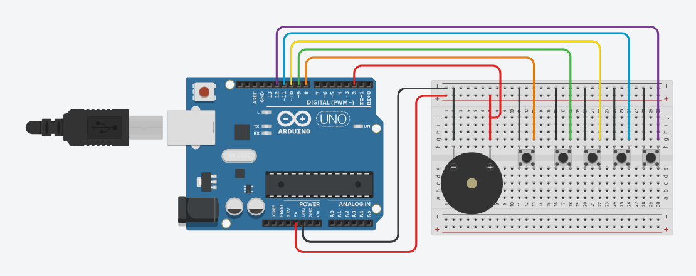

Ligação e código arduino

Código Copiado com sucesso!
const int BUTTONS_INICIO = 8;
const int BUTTONS_JOGADORES[4] = {9, 10, 11, 12};
int BUZZER = 2;
#define MAX_EQUIPES 12
struct Equipe {
String nome;
int gol;
};
Equipe EQUIPE[MAX_EQUIPES];
int totalEquipes = 0;
bool comecarJogo = false;
unsigned long tempoRelogio = 0;
unsigned long tempoComecarJogo = 0;
unsigned long tempoButton = 0;
unsigned long tempoStart = 0;
// tempo jogos
int tempoMinutos = 0;
int tempoSegundos = 0;
int tempoAtual = 1;
bool intervalo = false;
int segundos = 0;
int minutos = 0;
// Variáveis globais para o Buzzer não-bloqueante
unsigned long buzzerMillis = 0;
int buzzerContagem = 0;
int buzzerVezesTotal = 0;
int buzzerOn = 0;
int buzzerOff = 0;
bool buzzerEstado = false;
// Nova função de tocar o Buzzer (apenas configura a
execução)
void tocarBuzzer(int vezes, int tempoLigado, int
tempoDesligado) {
buzzerVezesTotal = vezes * 2; // Multiplica por 2
(liga e desliga)
buzzerContagem = 0;
buzzerOn = tempoLigado;
buzzerOff = tempoDesligado;
buzzerMillis = millis();
}
// Função que gerencia o som (deve estar no loop)
void gerenciarBuzzer() {
if (buzzerContagem < buzzerVezesTotal) {
unsigned long atual = millis();
int intervalo = buzzerEstado ? buzzerOn : buzzerOff;
if (atual - buzzerMillis >= intervalo) {
buzzerMillis = atual;
buzzerEstado = !buzzerEstado;
digitalWrite(BUZZER, buzzerEstado ? HIGH : LOW);
buzzerContagem++;
// Se terminou todas as repetições, garante que o
buzzer desligue
if (buzzerContagem >= buzzerVezesTotal) {
digitalWrite(BUZZER, LOW);
buzzerEstado = false;
}
}
}
}
void iniciarJogo(){
for(int i = 0; i < totalJogadores(); i++){
botaoAcionado(i);
}
}
void setup()
{
Serial.begin(9600);
pinMode(BUZZER, OUTPUT);
pinMode(BUTTONS_INICIO, INPUT_PULLUP);
for(int i = 0; i < totalJogadores(); i++){
pinMode(BUTTONS_JOGADORES[i], INPUT_PULLUP);
}
}
void loop()
{
receberSerial();
gerenciarBuzzer();
// 1. LEITURA DOS GOLS: AGORA FORA DO IF
// Permitir marcar/anular golos mesmo com o tempo parado
iniciarJogo();
// 2. ATUALIZAR RELÓGIO
// O relógio só avança se comecarJogo for true, mas a
função agora
// será chamada sempre para garantir o envio dos dados
(enviarSerial)
atualizarRelogio();
// 3. LEITURA DO BOTÃO DE START/PRÓXIMO (Este sim pode
ter o delay de 200ms)
if (millis() - tempoComecarJogo > 200){
tempoComecarJogo = millis();
if (digitalRead(BUTTONS_INICIO) == LOW && millis() -
tempoStart > 500) {
tempoStart = millis();
if (!comecarJogo) {
if (intervalo) {
// ... lógica de reiniciar para 2º tempo
intervalo = false;
comecarJogo = true;
minutos = 0;
segundos = 0;
tocarBuzzer(3, 100, 100);
Serial.println("{\"evento\":\"start\",
\"tempoAtual\":2}");
} else {
// Se o jogo está parado, avisa o site
para carregar as equipas
Serial.println("{\"evento\":
\"btn_fisico_proximo\"}");
}
}
}
}
}
void atualizarRelogio() {
unsigned long agora = millis();
if (comecarJogo && !intervalo) {
while (agora - tempoRelogio >= 1000) {
tempoRelogio = agora;
segundos++;
adicionarMinuto();
}
} else {
// Se o jogo está parado, mantemos o tempoRelogio
sincronizado com o agora
// para que, ao reiniciar, ele não saia contando
segundos atrasados
tempoRelogio = agora;
}
enviarSerial();
}
void enviarSerial() {
Serial.print("{");
Serial.print("\"tempo\":\"");
if (minutos < 10) Serial.print("0");
Serial.print(minutos);
Serial.print(":");
if (segundos < 10) Serial.print("0");
Serial.print(segundos);
Serial.print("\",");
Serial.print("\"tempoAtual\":");
Serial.print(tempoAtual);
Serial.print(",");
Serial.print("\"jogos\":[");
Serial.print(jogos());
Serial.print("]");
Serial.println("}");
}
void receberSerial() {
if (Serial.available()) {
String linha = Serial.readStringUntil('\n');
if (linha.startsWith("{")) {
interpretarComando(linha);
}
}
}
void interpretarComando(String json) {
// 1. Prioridade Total: RESET e CONFIGURAÇÃO
// Estes comandos devem rodar mesmo que comecarJogo seja
true
if (json.indexOf("\"comando\":\"reset_gols\"") != -1) {
for(int i = 0; i < MAX_EQUIPES; i++) {
EQUIPE[i].gol = 0;
}
minutos = 0;
segundos = 0;
comecarJogo = false;
intervalo = false; // IMPORTANTE: Resetar o intervalo
também
tempoAtual = 1; // Volta para o primeiro tempo
tocarBuzzer(1, 500, 0);
Serial.println("{\"debug\":\"reset_completo\"}");
return; // Sai da função após o reset
}
// 2. EQUIPES (Sempre reseta o estado interno ao receber
novos nomes)
if (json.indexOf("\"equipes\"") != -1) {
comecarJogo = false; // Para o cronómetro se estiver
a correr
intervalo = false;
minutos = 0;
segundos = 0;
tempoAtual = 1;
int inicio = json.indexOf("[");
int fim = json.indexOf("]");
String lista = json.substring(inicio + 1, fim);
int index = 0;
while (lista.length() > 0 && index < MAX_EQUIPES) {
int virgula = lista.indexOf(",");
String nome;
if (virgula == -1) {
nome = lista;
lista = "";
} else {
nome = lista.substring(0, virgula);
lista = lista.substring(virgula + 1);
}
nome.replace("\"", "");
nome.trim();
EQUIPE[index].nome = nome;
EQUIPE[index].gol = 0;
index++;
}
totalEquipes = index;
Serial.println("{\"debug\":
\"equipes_prontas_aguardando_start\"}");
return;
}
// 3. BLOQUEIO DE SEGURANÇA (Para comandos de START)
// Se o jogo já está rodando, não processa o "start"
novamente
if (comecarJogo && (json.indexOf("\"start\"") != -1
|| json.indexOf("\"comando\":\"start\"") != -1)) {
return;
}
// 4. COMANDO START
if (json.indexOf("\"start\"") != -1 || json.indexOf(
"\"comando\":\"start\"") != -1) {
tocarBuzzer(2, 200, 200);
if (intervalo) {
intervalo = false;
tempoAtual = 2;
} else {
tempoAtual = 1;
}
minutos = 0;
segundos = 0;
tempoRelogio = millis();
comecarJogo = true;
tempoStart = millis();
Serial.print("{\"evento\":\"start\",\"tempoAtual\":");
Serial.print(tempoAtual);
Serial.println("}");
}
// 5. CONFIGURAÇÃO DE TEMPO
// --- CONFIGURAÇÃO DE TEMPO ---
if (json.indexOf("\"configuracao\"") != -1) {
int posTempo = json.indexOf("\"tempo\":\"");
if (posTempo != -1) {
int inicio = posTempo + 9;
int fim = json.indexOf("\"", inicio);
String tempoStr = json.substring(inicio, fim);
// Ex: "05:00"
int separador = tempoStr.indexOf(":");
if(separador != -1) {
tempoMinutos = tempoStr.substring(0, separador)
.toInt();
tempoSegundos = tempoStr.substring(separador + 1)
.toInt();
// Garante que o tempo não é 0 para não bugar
if(tempoMinutos == 0 && tempoSegundos == 0) {
tempoMinutos = 5; // Valor padrão de segurança
}
}
Serial.print("{\"debug\":\"tempo_configurado\",
\"min\":");
Serial.print(tempoMinutos);
Serial.print(", \"seg\":");
Serial.print(tempoSegundos);
Serial.println("}");
}
}
}
String jogos() {
if (totalEquipes < 2) return "";
String texto = "";
for (int i = 0; i < totalEquipes; i += 2) {
texto += "{";
texto += "\"equipeMandante\":\"";
texto += EQUIPE[i].nome;
texto += "\",";
texto += "\"golMandante\":";
texto += EQUIPE[i].gol;
texto += ",";
texto += "\"equipeVisitante\":\"";
if (i + 1 < totalEquipes) {
texto += EQUIPE[i + 1].nome;
} else {
texto += "";
}
texto += "\",";
texto += "\"golVisitante\":";
if (i + 1 < totalEquipes) {
texto += EQUIPE[i + 1].gol;
} else {
texto += 0;
}
texto += "}";
if (i < totalEquipes - 2) {
texto += ",";
}
}
return texto;
}
void adicionarMinuto(){
if (segundos == 60) {
segundos = 0;
minutos++;
}
zerarMinutos();
}
void zerarMinutos() {
// Verifica se o tempo atual atingiu o limite configurado
// Ex: Se configuraste 05:00, ele para quando
minutos == 5 e segundos == 0
if (minutos >= tempoMinutos && segundos >= tempoSegundos)
{
if (tempoAtual == 1) {
// Vai para o Intervalo
comecarJogo = false;
intervalo = true;
tempoAtual = 2; // Prepara o marcador para o 2º tempo
minutos = 0;
segundos = 0;
tocarBuzzer(3, 300, 200);
Serial.println("{\"evento\":\"intervalo\"}");
}
else if (tempoAtual == 2) {
// Fim do Jogo Total
comecarJogo = false;
intervalo = false;
tempoAtual = 1; // Reseta para o próximo jogo ser
1º tempo
tocarBuzzer(5, 200, 150);
Serial.println("{\"evento\":\"fim_jogo\"}");
}
}
}
void botaoAcionado(int i) {
// Verifica o botão e o debounce
if (digitalRead(BUTTONS_JOGADORES[i]) == LOW &&
(millis() - tempoButton > 250)) {
tempoButton = millis();
// Incrementa o golo apenas se houver equipa registada
if (i < totalEquipes) {
EQUIPE[i].gol++;
// Envia um aviso imediato para o Console do Site ver
Serial.print("{\"debug\":\"Botao pressionado\",
\"jogador\":");
Serial.print(i);
Serial.println("}");
// Entra no modo VAR (Confirmação)
confirmarGol(i);
// Envia o placar atualizado
enviarSerial();
}
// Trava para não contar múltiplos golos se segurar
o botão
while(digitalRead(BUTTONS_JOGADORES[i]) == LOW) {
atualizarRelogio();
gerenciarBuzzer();
}
}
}
void confirmarGol(int i) {
unsigned long inicioVAR = millis();
// Janela de 5 segundos para o adversário anular
while(millis() - inicioVAR < 5000) {
atualizarRelogio(); // CRÍTICO: Mantém o tempo rodando
no site e no Arduino
int inimigo = adversario(i);
if(digitalRead(BUTTONS_JOGADORES[inimigo]) == LOW) {
// GOL ANULADO!
EQUIPE[i].gol--;
Serial.print("{\"evento\":\"gol_anulado\",
\"time\":");
Serial.print(i);
Serial.println("}");
// Espera o adversário soltar o botão antes
de continuar
while(digitalRead(BUTTONS_JOGADORES[inimigo])
== LOW) {
atualizarRelogio();
}
// Pequena pausa de 2 segundos de "luto" pelo
gol anulado
unsigned long pausa = millis();
while(millis() - pausa < 2000) {
atualizarRelogio();
}
return; // Sai da função de confirmação
}
}
}
int totalJogadores(){
return sizeof(BUTTONS_JOGADORES) /
sizeof(BUTTONS_JOGADORES[0]);
}
int adversario(int jogador){
if(jogador % 2 == 0){
return jogador + 1;
}else{
return jogador - 1;
}
}
🔴 Desconectado
1º TEMPO
00:00
Todos os Jogos
| Equipe | Gol | Gol | Equipe |
|---|